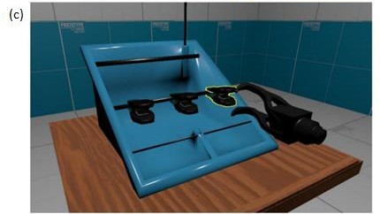
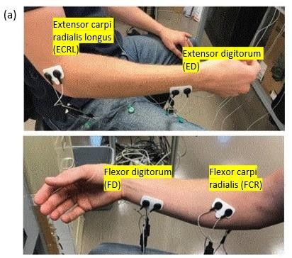
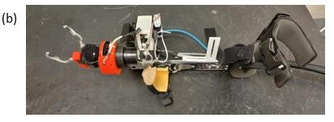
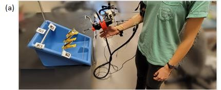
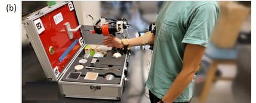
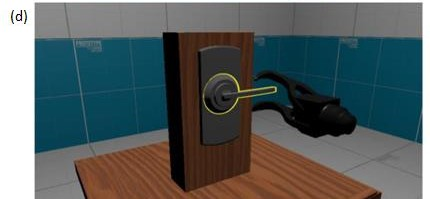
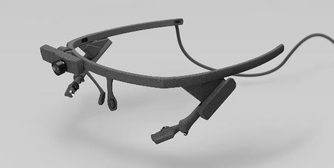

EMG in VR.
Training for a prosthesis without wearing one.
A VR simulation of a muscle-controlled prosthetic hand, tested against the real device. Forty participants, four kinds of measures, and a clear signal: the virtual version asked less of people's minds.
Can a virtual hand help you learn a real prosthesis?
People who use prosthetic hands often abandon them because they are hard to use or mentally demanding. VR is an appealing way to train, since it is repeatable, safe and can be done anywhere, but nobody had measured how mentally demanding and usable a VR prosthesis simulation actually is.
We built a VR simulation of an EMG-controlled prosthesis, driven by real muscle signals, and compared it with a physical prosthetic hand. Forty participants did the same everyday tasks in one or the other. Those in VR showed lower cognitive workload on pupil, subjective and performance measures, and rated the device as lighter and more comfortable. The work was published at IEEE SMC 2023.
- PARTICIPANTS
- 4020 with the physical device, 20 in VR
- MEASURES
- 4 kindsPupil size, task performance, NASA-TLX, usability surveys
- VENUE
- IEEE SMC 2023Oahu, Hawaii

Devices that are hard to use get left in a drawer.
More than 2.1 million amputees live in the United States, and prosthetic hands are essential for everyday activities. Low usability and high mental effort both push users toward rejecting the device. VR training could help, but earlier studies left two gaps:
- Workload was rarely measured objectively. Only one earlier study compared workload between VR and physical devices, using a questionnaire alone, which can suffer from self-report bias.
- Usability of the simulation itself was not assessed. If a simulation is confusing or awkward, people spend their effort on the software rather than on learning, and it can hurt motivation.
Hypotheses: VR reduces cognitive workload (H1) and increases perceived usability (H2) compared with the physical prosthesis.
Real muscle signals, virtual or physical hand.
The same EMG signals drove both setups, so only the environment changed. Sensors on the forearm were processed in MATLAB, and the classified gestures either moved a commercial two-degree-of-freedom prosthetic hand or a virtual one shown in an HTC Vive Pro Eye headset. The VR scenes were built in Unity.
- Direct control (DC)
- Two sensors on the wrist flexor and extensor muscles. The conventional approach, and the less intuitive one.
- Pattern recognition (PR)
- Four sensors, adding the finger flexor and extensor muscles, so natural gestures (open, close, rotate) are classified directly.


Same tasks, two environments.
Forty able-bodied adults with no prior prosthesis experience were randomly assigned to an environment (VR or physical) and a control mode (DC or PR). Each did two standard activity-of-daily-living tasks, three trials each, with rests between.



- Clothespin relocation. Move as many pins as possible from one bar to another in two minutes.
- Door handle. Rotate a handle with a power grip until it opens, then release, five times as fast as possible.
- Workload. Percent change in pupil size (PCPS) from a Pupil Core eye tracker, plus task performance and the NASA-TLX questionnaire after every trial.
- Usability. The USE questionnaire and QUEST 2.0, a satisfaction measure for assistive technology.

Lower workload in VR, and a lighter hand.
Ten measures differed significantly between the VR and physical conditions. Statistics are from the paper.
| MEASURE | FINDING | STATISTIC |
|---|---|---|
| COGNITIVE WORKLOAD | ||
| Pupil size change (PCPS) | Smaller in VR | F(1,225)=12.55, p<.001 |
| Blink rate | Higher in VR | F(1,226)=23.05, p<.001 |
| Task performance | Better in VR | F(1,224)=4.79, p=.03 |
| NASA-TLX overall | Lower in VR | F(1,228)=9.31, p=.003 |
| Mental demand | Lower in VR | F(1,228)=9.14, p=.003 |
| Temporal demand | Lower in VR | F(1,228)=10.30, p=.002 |
| Effort | Lower in VR | F(1,228)=7.81, p=.007 |
| Frustration | Lower in VR | F(1,228)=12.09, p<.001 |
| USABILITY | ||
| QUEST 2.0, weight | VR rated better | F(1,34)=11.49, p=.002 |
| QUEST 2.0, comfort | VR rated better | F(1,34)=7.14, p=.01 |
| USE questionnaire | No significant difference | F(1,34)=1.12, p=.30 |
There was also an interaction between environment and control mode. With direct control, people showed a larger pupil response and reported more effort with the physical device than in VR. With pattern recognition, the two environments did not differ. The more intuitive the control, the less the environment mattered.
What the data suggest about the experience.
The device itself is a burden
Participants said the physical hand was heavy and bulky and sometimes blocked their view of the task, so they could not focus on learning to control it. In VR there was no device to carry.
Attention goes to the hand
Earlier work shows people using EMG prostheses watch their hand instead of the objects. In VR they only saw a hook, which may free attention, though it may also have contributed to the pupil results.
A general usability scale missed it
USE showed no difference while QUEST 2.0 did. The authors suggest USE was designed for generic products, whereas QUEST 2.0 asks about assistive-device qualities like weight and comfort.
The test of a good simulation
Better performance in VR is not by itself proof of lower workload, which is why the study combined pupil, subjective and performance measures.
What this study cannot say.
- No amputees. All participants were able-bodied adults, because few trans-radial amputees were available nearby. Results may differ for people with limb loss.
- Different groups and sites. The physical and VR conditions used different participants, tested at different universities.
- Lighting. A headset blocks outside light, which affects pupil size, so lighting could account for some of the pupil difference.
- Short term. The study did not test whether skills learned in VR transfer to a physical prosthesis or are retained over time.
- Light tasks. The tasks needed no extreme force. An earlier study with heavy lifting found VR more demanding.
Design implications.
- Developers can test new control algorithms and devices in VR early, before building hardware.
- Clinicians could use VR to help choose a suitable prosthesis for a patient.
- Choose measures made for assistive technology, and pair subjective ratings with physiological ones.
- Next: include amputees, allow for different habituation times, and test long-term training and transfer.
Read the paper: Cognitive Workload and Usability of Virtual Reality Simulation for Prosthesis Training, IEEE SMC 2023. Co-authors: Junho Park, Austin Music, Joseph Berman, Albert Dodson, Yunmei Liu, Jaime Ruiz, He Huang, David Kaber and Maryam Zahabi.
The full
paper.
Methods, statistics and discussion are in the IEEE SMC 2023 paper.
OPEN THE PAPER ↗